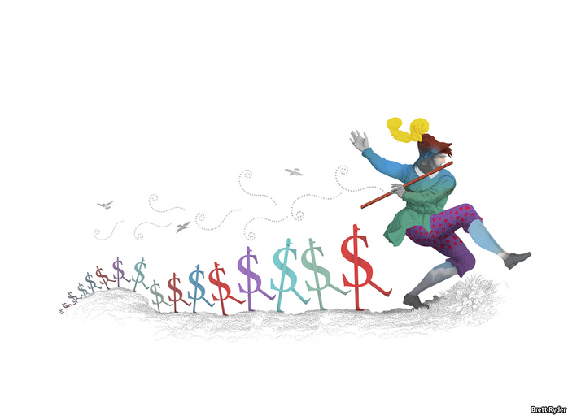

Text
2021-02-25T16:20:07+00:00
Schumpeter
熊彼特
熊彼特
Alpha pipers
阿尔法魔笛手
阿爾法魔笛手
The cult of an Elon Musk or a Jack Ma has its perks—but also perils
对马斯克、马云等人的膜拜有好处——也有坏处
對馬斯克、馬雲等人的膜拜有好處——也有壞處

“I AM BECOME meme, Destroyer of shorts.” This recent tweet by Elon Musk struck a messianic tone that his disciples lap up. The past month has boosted the cult status of the uber-entrepreneur. The GameStop saga gave him ammunition in his long-running battle with short-sellers, while also positioning him as a champion of the little guy taking on Wall Street. This week fans were spellbound by the announcement that Mr Musk’s electric-car maker, Tesla, had invested $1.5bn in bitcoin and would start accepting the cryptocurrency as a form of payment. Earlier, a barrage of cheeky tweets from Mr Musk about dogecoin (“the people’s crypto”) had sent serious investors scrambling to learn more about a digital currency that started as a joke.
“我是散户神股化身，空头毁灭者。”马斯克最近这条推文一派救世主口吻，粉丝们听来甘之如饴。过去一个月，对这位超级企业家的膜拜再次升级。游戏驿站（GameStop）事件为他对抗做空者的持久战提供了弹药，同时也把他塑造成小散户对抗华尔街的领军人物。最近，马斯克的电动汽车公司特斯拉宣布已投资15亿美元买入比特币，并将开始接受比特币付款，令粉丝们心驰神往。此前，马斯克有关狗狗币连串口不择言的推文（说它是“人民的加密货币”）一出，许多严肃投资者忙不迭地研究起这个一开始只是个玩笑的数字货币。
“我是散戶神股化身，空頭毀滅者。”馬斯克最近這條推文一派救世主口吻，粉絲們聽來甘之如飴。過去一個月，對這位超級企業家的膜拜再次升級。遊戲驛站（GameStop）事件為他對抗做空者的持久戰提供了彈藥，同時也把他塑造成小散戶對抗華爾街的領軍人物。最近，馬斯克的電動汽車公司特斯拉宣布已投資15億美元買入比特幣，並將開始接受比特幣付款，令粉絲們心馳神往。此前，馬斯克有關狗狗幣連串口不擇言的推文（說它是“人民的加密貨幣”）一出，許多嚴肅投資者忙不迭地研究起這個一開始只是個玩笑的數字貨幣。
Impish humour is a Musk hallmark, but the impact of his missives is no joke. They can set herds stampeding. His bitcoin announcement propelled it to new heights. Tesla’s market value briefly climbed above $830bn, near its peak. The history of business is littered with Pied Pipers but, as Peter Atwater, a social psychologist, points out, none has matched Mr Musk for the number of things he has helped turn red-hot, from cars and crypto to space travel and Clubhouse, a live-podcasting app he appeared on. That invites two questions. What makes the Musk scent so intoxicating to so many? And what are the pros and cons of being a cult CEO?
搞怪式幽默是马斯克的标志，但他推文的影响力可不是闹着玩儿的。这些文字足以引发集体狂热。他有关比特币的言论把这一数字货币推至新高度。特斯拉的市值一度攀升至超过8300亿美元，接近其史上峰值。“魔笛手”在商业史上随处可见，但正如社会心理学家彼得·阿特沃特（Peter Atwater）指出的，马斯克“带货”下爆红的事物之多无人能及——汽车、加密货币、太空旅行，还有他现身开讲的直播应用Clubhouse。这就引出了两个问题。马斯克气息何以如此迷倒众生？而做一个被封神的CEO又有何利弊？
搞怪式幽默是馬斯克的標誌，但他推文的影響力可不是鬧著玩兒的。這些文字足以引發集體狂熱。他有關比特幣的言論把這一數字貨幣推至新高度。特斯拉的市值一度攀升至超過8300億美元，接近其史上峰值。“魔笛手”在商業史上隨處可見，但正如社會心理學家彼得·阿特沃特（Peter Atwater）指出的，馬斯克“帶貨”下爆紅的事物之多無人能及——汽車、加密貨幣、太空旅行，還有他現身開講的直播應用Clubhouse。這就引出了兩個問題。馬斯克氣息何以如此迷倒眾生？而做一個被封神的CEO又有何利弊？
Larger-than-life business figures enjoy various degrees of celebrity. One category includes chief executives of big firms who, while charismatic, fail to inspire feverish devotion. Jeff Bezos, Amazon’s outgoing boss, commands admiration on Wall Street and envy in other corner offices, but is too restrained to attract drooling groupies. Similarly, in his 20 years running GE, Jack Welch earned a reputation (since disputed) for red-toothed success, but was too cold-blooded to mesmerise the masses.
商界传奇人物的人气各异。其中一类是虽然魅力十足，却未引发狂热追捧的大公司首席执行官。即将卸任亚马逊CEO的贝索斯在华尔街深受敬佩，也让其他公司的高管羡慕，但他行事谨慎克制，难以吸引粉丝为他神魂颠倒。同样，执掌GE长达20年的韦尔奇以铁腕制胜闻名（之后备受争议），但他太冷血无情，难以让大众着迷。
商界傳奇人物的人氣各異。其中一類是雖然魅力十足，卻未引發狂熱追捧的大公司首席執行官。即將卸任亞馬遜CEO的貝索斯在華爾街深受敬佩，也讓其他公司的高管羨慕，但他行事謹慎克制，難以吸引粉絲為他神魂顛倒。同樣，執掌GE長達20年的韋爾奇以鐵腕制勝聞名（之後備受爭議），但他太冷血無情，難以讓大眾着迷。
The second group comprises tycoons who achieve cultlike status but whose businesses scarcely warrant the adulation. Their trademark is often shameless self-promotion. Richard Branson has spent decades cultivating an image as a corporate hippy-cum-pirate who takes on complacent incumbents in industries from aviation to finance. Donald Trump touted himself as the arch-dealmaker. Both have hordes of wide-eyed fans. Neither has built a business that comes close to $10bn in value or is built for stability.
第二类是那种崇拜者众，但他们的企业根本配不上这般追捧的富豪。他们的标志往往是恬不知耻的自吹自擂。理查德·布兰森（Richard Branson）几十年来一直为自己打造嬉皮士加海盗企业家的形象，挑战航空、金融等行业内固步自封的传统企业。特朗普把自己吹捧为交易高手。两人都有大批天真的粉丝，但他们企业的价值都不到100亿美元，也并不稳健。
第二類是那種崇拜者眾，但他們的企業根本配不上這般追捧的富豪。他們的標誌往往是恬不知恥的自吹自擂。理查德·布蘭森（Richard Branson）幾十年來一直為自己打造嬉皮士加海盜企業家的形象，挑戰航空、金融等行業內固步自封的傳統企業。特朗普把自己吹捧為交易高手。兩人都有大批天真的粉絲，但他們企業的價值都不到100億美元，也並不穩健。
The third category is more exclusive: those who build both cults of personality and huge businesses. Joining Mr Musk in this club is Jack Ma, the founder of Alibaba, China’s tech titan. Millions of Chinese college students and other wannabe entrepreneurs bought into the image he cultivated, of a humble teacher turned philanthropic tech titan with a splash of cultural cool (he once appeared as a tai chi master in a martial-arts film). Admiration of Mr Ma has often verged on religious fervour. In 2015 a group of online merchants created a shrine to him, to bring them good luck on “singles day”, an e-shopping festival.
第三类的人数更少：他们既打造了受人膜拜的个人形象，又创建了庞大的企业王国。与马斯克同属这一类的还有中国科技巨头阿里巴巴的创始人马云。千百万中国大学生和其他怀揣创业梦的人景仰他塑造的形象：从一名普通教师变身仁慈的科技大亨，还带一丝文化酷感（他曾在一部武侠电影中扮演太极宗师）。人们对马云的崇拜往往近乎宗教狂热。2015年，一群网络商家建了一座神龛供奉他，祈求在双十一购物节为他们带来好运。
第三類的人數更少：他們既打造了受人膜拜的個人形象，又創建了龐大的企業王國。與馬斯克同屬這一類的還有中國科技巨頭阿里巴巴的創始人馬雲。千百萬中國大學生和其他懷揣創業夢的人景仰他塑造的形象：從一名普通教師變身仁慈的科技大亨，還帶一絲文化酷感（他曾在一部武俠電影中扮演太極宗師）。人們對馬雲的崇拜往往近乎宗教狂熱。2015年，一群網絡商家建了一座神龕供奉他，祈求在雙十一購物節為他們帶來好運。
Messrs Musk and Ma walk a trail blazed by an Indian business legend: Dhirubhai Ambani, who founded Reliance Industries, a petrochemicals-to-telecoms conglomerate. The son of a village schoolteacher who cut his teeth trading polyester yarn, Ambani pioneered the equity cult. His trick, in a country where companies had long relied mostly on banks for funding, was to see the untapped potential lower down the pyramid. He toured India, convincing middle-class savers that they, too, could join the capitalist class. When Reliance went public in 1977 it attracted 58,000 punters. The shareholders he drew in have done well: the share price has gained 275,000% since the flotation. When 30,000 of them turned up to pay homage at one general meeting, it had to be moved to a park. These days only Warren Buffett attracts zealots in such numbers (or did before covid-19).
马斯克和马云这一路线的开山鼻祖是一位印度的商界传奇人物：创立了信实工业（Reliance Industries）这家业务覆盖石化以至电信的企业集团的迪鲁巴伊·安巴尼（Dhirubhai Ambani）。安巴尼是一位乡村教师的儿子，一开始做聚酯纱线买卖的他是掀起股票狂热的先驱。在印度，企业向来要依赖银行融资，而安巴尼的本事就是看到了金字塔下层尚未开发的潜力。他在印度四处游说中产阶级储蓄者，让他们相信自己也可以迈入资本家阶级的行列。信实在1977年上市时吸引到58,000人投资。这些股东获得了不俗的回报：股价自上市以来上涨了275,000%。在一次股东大会上，其中三万人来到现场表达敬意，会议不得不转移到一个公园内举行。这些年（或者说，在新冠疫情前）只有巴菲特才能吸引来如此数量的狂热粉丝。
馬斯克和馬雲這一路線的開山鼻祖是一位印度的商界傳奇人物：創立了信實工業（Reliance Industries）這家業務覆蓋石化以至電信的企業集團的迪魯巴伊·安巴尼（Dhirubhai Ambani）。安巴尼是一位鄉村教師的兒子，一開始做聚酯紗線買賣的他是掀起股票狂熱的先驅。在印度，企業向來要依賴銀行融資，而安巴尼的本事就是看到了金字塔下層尚未開發的潛力。他在印度四處遊說中產階級儲蓄者，讓他們相信自己也可以邁入資本家階級的行列。信實在1977年上市時吸引到58,000人投資。這些股東獲得了不俗的回報：股價自上市以來上漲了275,000%。在一次股東大會上，其中三萬人來到現場表達敬意，會議不得不轉移到一個公園內舉行。這些年（或者說，在新冠疫情前）只有巴菲特才能吸引來如此數量的狂熱粉絲。
Cult status confers perks. Equity is cheaper when those buying it are devout retail investors, not hard-headed institutions. Small investors are also more patient, heeding calls to “keep the faith” during profitless investment splurges. Marketing costs are low; Mr Musk can use social media to burnish his (and Tesla’s) brand for nothing. Fans are willing to overlook flaws that more dispassionate consumers won’t. Tesla’s build quality is hardly world-class and regulators, most recently China’s, frequently flag up concerns. Yet it is hard to see that reflected in the firm’s sales or share price. Lastly, mass appeal means political clout. Ambani’s popularity helped him bend India’s trade policy to his advantage. Mr Musk’s helps explain soft treatment by governments and regulators, over rogue tweets or reopening factories in the pandemic.
受人膜拜的地位会带来好处。当买家是虔诚的散户而非精明的机构时，股票融资会更便宜些。小投资者也更有耐心，在企业大举烧钱投资而没有盈利时能听从“坚守信念”的呼吁。营销成本也低，马斯克不花一文就能利用社交媒体擦亮自己（还有特斯拉）的招牌。相比冷静客观的消费者，粉丝们更愿意忽略企业的缺陷。特斯拉的汽车质量说不上世界级水准，监管机构也常发出警告——最近一次是中国的监管机构。但这一点却很少反映在特斯拉的销量或股价上。最后，大众热捧意味着政治影响力。安巴尼的人气帮助他游说印度政府向有利于他自己的方向调整贸易政策。而马斯克的人气也解释了为何政府和监管机构只是温和地处理了他任性的推文或在疫情期间重开工厂的做法。
受人膜拜的地位會帶來好處。當買家是虔誠的散戶而非精明的機構時，股票融資會更便宜些。小投資者也更有耐心，在企業大舉燒錢投資而沒有盈利時能聽從“堅守信念”的呼籲。營銷成本也低，馬斯克不花一文就能利用社交媒體擦亮自己（還有特斯拉）的招牌。相比冷靜客觀的消費者，粉絲們更願意忽略企業的缺陷。特斯拉的汽車質量說不上世界級水準，監管機構也常發出警告——最近一次是中國的監管機構。但這一點卻很少反映在特斯拉的銷量或股價上。最後，大眾熱捧意味着政治影響力。安巴尼的人氣幫助他遊說印度政府向有利於他自己的方向調整貿易政策。而馬斯克的人氣也解釋了為何政府和監管機構只是溫和地處理了他任性的推文或在疫情期間重開工廠的做法。
But combining star power and scale is not risk-free. Mr Musk forged his reputation as a David, fomenting rebellions against Detroit and Wall Street elites. But now he is a Goliath: the world’s richest man who runs its most valuable carmaker. Playing both roles is a dangerous game. This is made more so by being a cultural icon, which leaves him more vulnerable to changing social taste—and taste can change in a trice online.
但把明星影响力与企业规模相结合也非毫无风险。马斯克把自己打造成了勇斗巨人哥利亚的大卫，动员反抗底特律和华尔街的精英。如今他却成了哥利亚：掌管市值最高的汽车公司的全球首富。同时扮演这两种角色是一场危险的游戏。兼为文化偶像就更危险了，因为大众的口味会变，在网络世界里更是瞬息万变。
但把明星影響力與企業規模相結合也非毫無風險。馬斯克把自己打造成了勇斗巨人哥利亞的大衛，動員反抗底特律和華爾街的精英。如今他卻成了哥利亞：掌管市值最高的汽車公司的全球首富。同時扮演這兩種角色是一場危險的遊戲。兼為文化偶像就更危險了，因為大眾的口味會變，在網絡世界裡更是瞬息萬變。
Ye shall fund you no idols
不可投资偶像
不可投資偶像
Sentiment could turn if his devotees start to doubt he has their interests at heart. Ambani was able to bat away repeated allegations of financial manipulation; he beat back short-sellers with help from a group of brokers known as “Friends of Reliance”. Mr Musk may not be so lucky. Acolytes who piled into GameStop stock after his “Gamestonk!!” rallying cry on January 26th were buying near the top. His recent crypto-talk looks self-serving in light of Tesla’s bitcoin move.
当信徒们开始怀疑神明是否真的心怀他们的利益时，情绪便可能逆转。安巴尼能多次摆脱操纵金融的指控，又在一群号称“信实之友”的券商的帮助下击退了卖空者。马斯克可能没那么幸运。在他1月26日发出“游戏开炮!!”的战斗口号后，他的信徒大举买入游戏驿站的股票，但当时股价已接近顶点。考虑到特斯拉对比特币的投资，马斯克最近有关加密货币的言论似乎是出于私心。
當信徒們開始懷疑神明是否真的心懷他們的利益時，情緒便可能逆轉。安巴尼能多次擺脫操縱金融的指控，又在一群號稱“信實之友”的券商的幫助下擊退了賣空者。馬斯克可能沒那麼幸運。在他1月26日發出“遊戲開炮!!”的戰鬥口號後，他的信徒大舉買入遊戲驛站的股票，但當時股價已接近頂點。考慮到特斯拉對比特幣的投資，馬斯克最近有關加密貨幣的言論似乎是出於私心。
Finally, political advantage can turn into a bane. Just ask Mr Ma, who, overestimating his power, publicly chided Chinese regulators last year. Irked, Beijing scuppered the planned listing of Ant, Alibaba’s financial affiliate, and is forcing it to restructure. Joining the ranks of cult CEOs may lower your cost of funding. But it raises the cost of miscalculation. ■
最后，政治上的优势也可能变成祸根。问问马云就知道。他高估了自己的力量，在去年公开指责中国的监管机构。恼怒之下，政府叫停了阿里巴巴旗下金融服务公司蚂蚁集团的上市计划，并正迫使它重组。加入CEO封神榜或许能降低融资成本，但也会增加误判成本。
最後，政治上的優勢也可能變成禍根。問問馬雲就知道。他高估了自己的力量，在去年公開指責中國的監管機構。惱怒之下，政府叫停了阿里巴巴旗下金融服務公司螞蟻集團的上市計劃，並正迫使它重組。加入CEO封神榜或許能降低融資成本，但也會增加誤判成本。